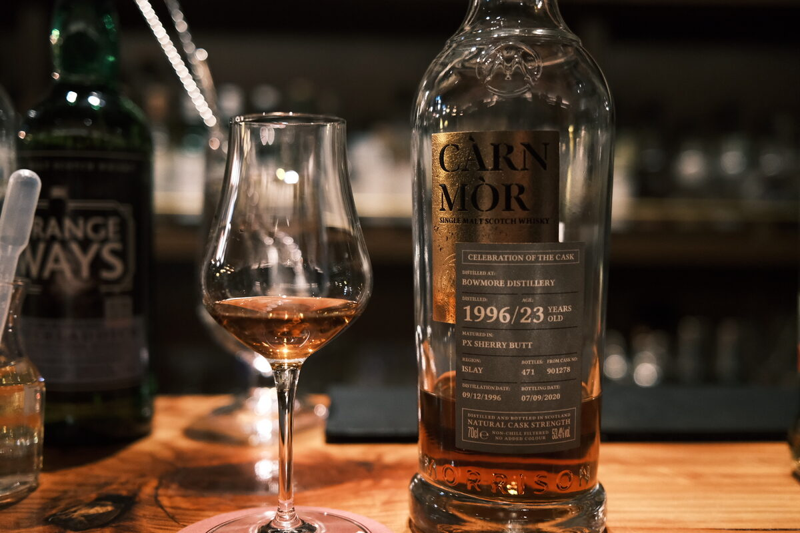

Bowmore 1996 Càrn Mòr 23 years 53.4% (PX sherry butt)
Have I mentioned how much I like Bowmore?
Colour Deep amber, rust.
Nose Wow. Bowmore DNA is strong despite the cask. Resinous, sandalwood, herbal woody notes. Perfumed, elegant. Fresh berries and cream. Macadamia nuts. Weiss bars. Waxy pears. Rosewater. A little bit of fruit yoghurt. Watermelon skins. With water, whipped Herbal cream. Leafy. Bananas. Absolutely insane. Vegetal peat.
Palate Herbal and woody. The wood has flavour — incensed and perfumed. Bright citrus, orange juice and orange peels. Dried fruits, raisins and sultanas. With water, some tannins come out. A bit of caramel. Cloves and a bit of chilli.
Finish Dried fruits. Mulled wine. Vanilla and dark chocolate pralines. Hazelnuts. Roses and a light tiramisu. Extremely long and herbal. Woody. Tannins. Heady and moreish.
Comments Spectacular Bowmore. Distillery character punches through the cask. Supreme balance. 92/100.

Posted by Dominic on 28 May 2021